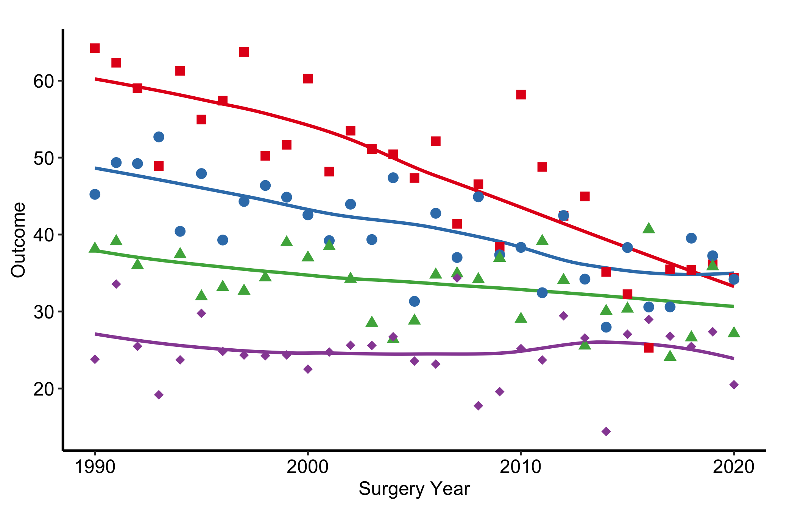
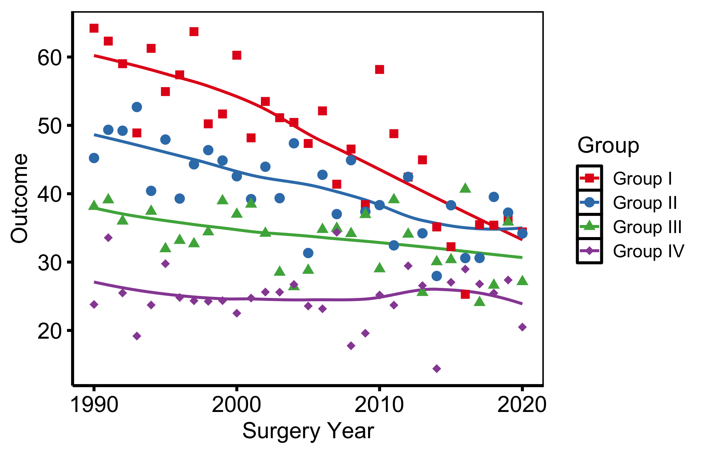
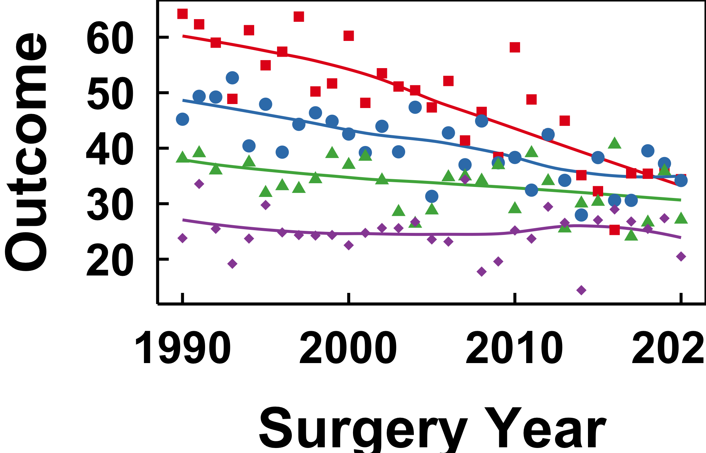
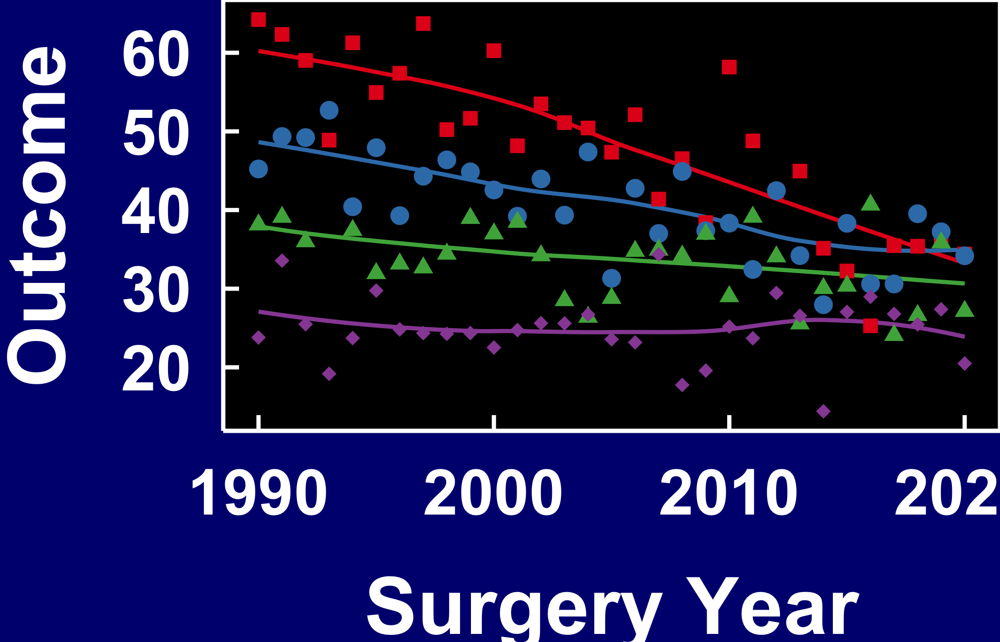
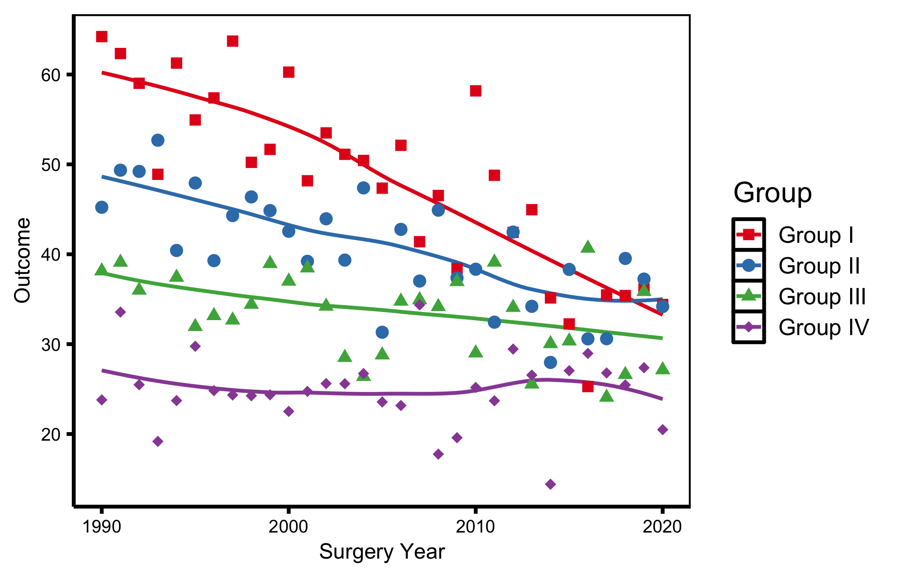
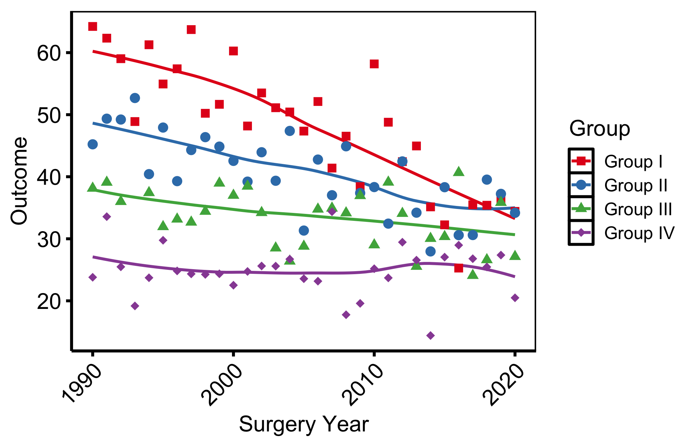
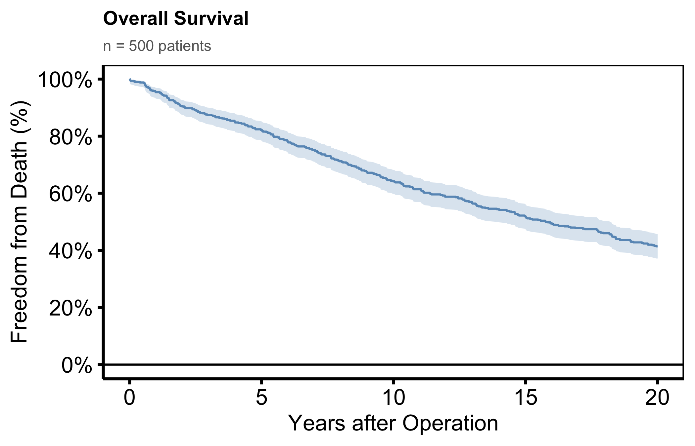
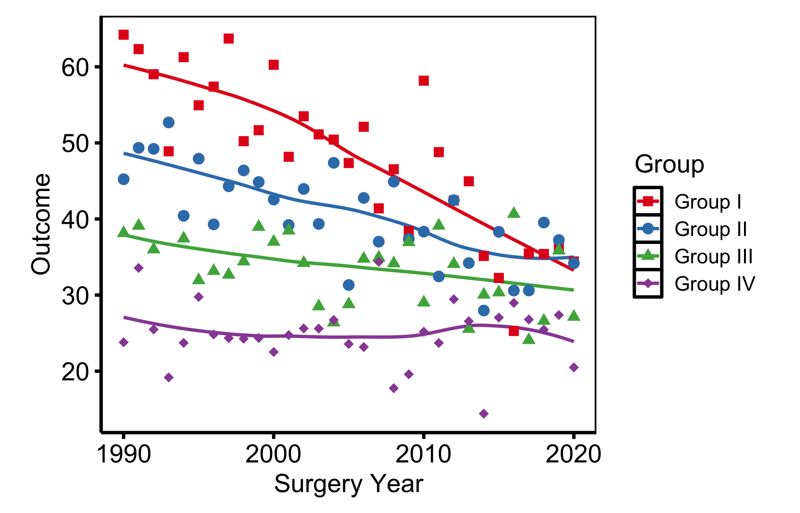

dta_trends <- sample_trends_data(n = 600, seed = 42)
p_base <- plot(hv_trends(dta_trends))
decorate <- function(p) {
p +
scale_colour_brewer(palette = "Set1", name = "Group") +
scale_shape_manual(
values = c("Group I" = 15, "Group II" = 19,
"Group III" = 17, "Group IV" = 18),
name = "Group"
) +
labs(x = "Surgery Year", y = "Outcome")
}6 Themes for consistency
hvtiPlotR (Ehrlinger 2026) ships output-target themes via theme_hv_*(). Each sets a complete non-data formatting baseline; the constructor and plot() add none of it. Pick the theme that matches where the figure lands.
| Theme | Target |
|---|---|
theme_hv_manuscript() |
Journal PDF, black-on-white |
theme_hv_poster() |
Conference poster, larger text |
theme_hv_ppt_light() |
PowerPoint on white/light background |
theme_hv_ppt_dark() |
PowerPoint on dark/navy background |
6.1 When to use it
A theme is everything on a plot that is not the data: text sizes, line weights, background, grid. Two figures of the same cohort can need very different versions of that chrome depending on where they end up. A journal page is read from a foot away in a quiet office; a poster is read from across a hall; a slide is read for fifteen seconds in a dim room. The font and tick weights that work in one fail in the others, and the right time to deal with that is by swapping a single theme call rather than hand-tuning a dozen theme() elements per figure.
The choice follows the destination, not your taste. Use theme_hv_manuscript() for anything headed to a journal: small text, white background, minimal chrome, tuned for a figure reduced to a column width. Use theme_hv_poster() for foam board and, often, for a projector in a meeting room, where the larger tick labels survive the distance. Use theme_hv_ppt_light() for slides on a white or light-grey background (the Cleveland Clinic template, most default Office decks) and theme_hv_ppt_dark() for navy or dark-gradient decks where the convention is white-on-dark. Match the theme to the background it will sit on and the distance it will be read from, and the rest takes care of itself.
We render the same base trends plot under each theme, then show targeted overrides. The shared decorations are factored out once.
6.2 Manuscript
Default for journal submissions — white background, black text, minimal chrome. Font sizes tuned for letter-size PDFs reduced to a column width.
decorate(p_base) + theme_hv_manuscript()
6.3 Poster
Larger axis text and tick weights, panel grid removed: reads at arm’s length on a foam board, and holds up on a projector.
decorate(p_base) + theme_hv_poster()
6.4 Light PowerPoint
Dark text and lines for white or light-grey slide backgrounds: the Cleveland Clinic standard template and most default Office decks.
decorate(p_base) + theme_hv_ppt_light()
6.5 Dark PowerPoint
White-on-dark for navy or dark-blue gradient decks. The theme sets a transparent plot background so the slide shows through; the plot.background override below simulates that navy in this rendered book and would be omitted when saving to an actual .pptx.
decorate(p_base) +
theme_hv_ppt_dark() +
theme(plot.background = element_rect(fill = "navy", colour = "navy"))
6.6 Theme overrides
Each theme is a baseline. Layer additional theme() calls after it to adjust individual elements without touching the rest. The same overrides can also be passed directly through the theme’s ..., e.g. theme_hv_poster(legend.position = "bottom").
6.6.1 Axis text size
Resize tick labels (axis.text) and axis titles (axis.title) independently, useful when scaling a figure down for a two-column layout.
decorate(p_base) +
theme_hv_poster() +
theme(
axis.text = element_text(size = 10),
axis.title = element_text(size = 12)
)
6.6.2 Removing minor grid lines
Minor grid lines add density without precision. Blank them while keeping the major grid.
decorate(p_base) +
theme_hv_poster() +
theme(panel.grid.minor = element_blank())
6.6.3 Rotating x-axis labels
For time-point or long category labels. angle = 45 with hjust = 1, vjust = 1 keeps the rotated label right-aligned to its tick.
decorate(p_base) +
theme_hv_poster() +
theme(axis.text.x = element_text(angle = 45, hjust = 1, vjust = 1))
6.6.4 Plot title and subtitle
Titles are stripped from the base themes (rarely used in journal figures) but can be added back via labs() and styled in theme().
dta_km <- sample_survival_data(n = 500, seed = 42)
km <- hv_survival(dta_km)
plot(km) +
scale_color_manual(values = c(All = "steelblue"), guide = "none") +
scale_fill_manual(values = c(All = "steelblue"), guide = "none") +
scale_y_continuous(breaks = seq(0, 100, 20),
labels = function(x) paste0(x, "%")) +
scale_x_continuous(breaks = seq(0, 20, 5)) +
coord_cartesian(xlim = c(0, 20), ylim = c(0, 100)) +
labs(
title = "Overall Survival",
subtitle = paste0("n = ", nrow(dta_km), " patients"),
x = "Years after Operation",
y = "Freedom from Death (%)"
) +
theme_hv_poster() +
theme(
plot.title = element_text(size = 14, face = "bold", hjust = 0),
plot.subtitle = element_text(size = 11, colour = "grey40", hjust = 0)
)
6.6.5 Expanding plot margins
Add breathing room around the panel, for a figure placed directly on a poster, or when labels clip a tight device edge. Arguments follow top / right / bottom / left order.
decorate(p_base) +
theme_hv_poster() +
theme(plot.margin = margin(t = 10, r = 20, b = 10, l = 20, unit = "pt"))
6.7 Pitfalls
- Poster text on a manuscript figure. The most common mismatch is reusing a poster-themed figure in a paper. The tick labels and line weights that read cleanly from across a hall look heavy and oversized on a journal page, and a reviewer notices. When the same analysis travels from a conference to a manuscript, re-render with
theme_hv_manuscript()rather than shrinking the poster version, so the text scales correctly for its new size. - Dark theme on a white slide.
theme_hv_ppt_dark()sets a transparent background and white text on the assumption that a dark slide sits behind it. Drop that figure onto a white slide and the white text vanishes. The reverse fails just as badly: a light-theme figure on a navy slide gives you a glaring white box in the middle of the deck. Pick the PowerPoint theme to match the slide background, and check the figure against the actual master rather than the white render in this book.